Discapacidad
Reconoce el impacto funcional de la enfermedad mediante un porcentaje. Sirve para acceder a beneficios, adaptaciones, ayudas, ventajas fiscales, movilidad y otros recursos vinculados al grado.
La gestionan las comunidades autónomas.
Derechos ELA sin perderse
La ELA no se tramita con un único expediente ni se resuelve con una sola ayuda. Discapacidad, dependencia e incapacidad laboral sirven para cosas distintas y conviene activarlas sin esperar a que la enfermedad obligue a hacerlo con prisas.
Esta guía ordena los pasos, explica qué puede pedir cada persona y ayuda a distinguir los derechos estatales de los recursos específicos disponibles en Cataluña.
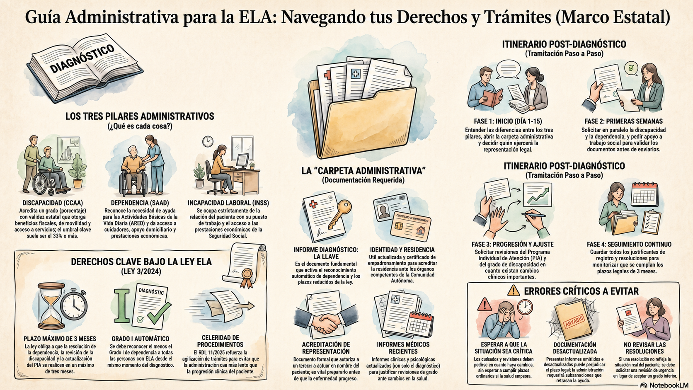
Uno de los errores más habituales es pensar que discapacidad, dependencia e incapacidad laboral son lo mismo. No lo son. Cada una responde a una pregunta diferente, la gestiona una administración distinta y abre el acceso a recursos concretos.
Reconoce el impacto funcional de la enfermedad mediante un porcentaje. Sirve para acceder a beneficios, adaptaciones, ayudas, ventajas fiscales, movilidad y otros recursos vinculados al grado.
La gestionan las comunidades autónomas.
Reconoce la necesidad de ayuda para realizar actividades básicas de la vida diaria, como asearse, vestirse, comer, desplazarse o recibir supervisión y apoyo continuado.
Es la vía que da acceso a servicios y prestaciones para el cuidado.
Analiza cómo afecta la enfermedad a la posibilidad de continuar trabajando y puede dar acceso a prestaciones de la Seguridad Social, como la pensión y el complemento de gran incapacidad (invalidez).
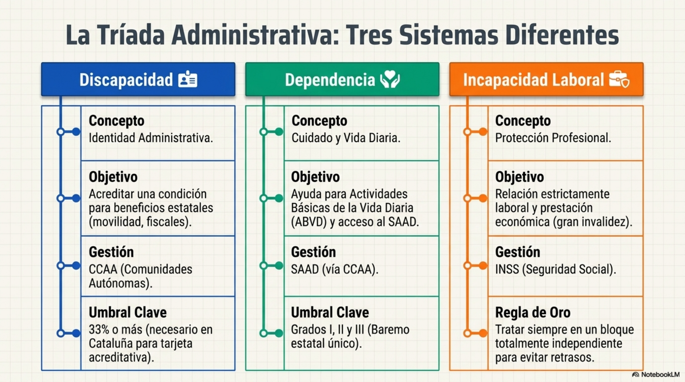
La Ley ELA no elimina todos los trámites, pero obliga a que determinados procedimientos avancen con mayor rapidez y reconoce que la enfermedad exige una respuesta social y sanitaria coordinada.
La calificación inicial de dependencia, la revisión del grado de dependencia y la revisión del Programa Individual de Atención deben resolverse, para las personas incluidas en la Ley ELA, en un plazo máximo de tres meses desde la solicitud.
La resolución de dependencia debe reconocer, como mínimo, un Grado I desde el diagnóstico de ELA. Es un suelo de protección inicial, no un límite.
La revisión del grado de discapacidad puede pedirse en cualquier momento y debe resolverse en un máximo de tres meses para las personas incluidas en la Ley ELA.
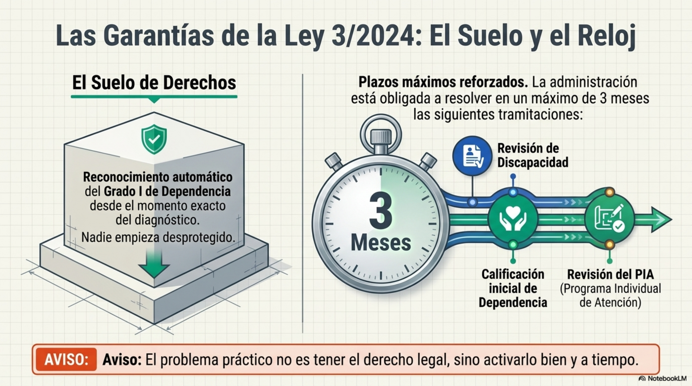
Recurso audiovisual
 Ver el vídeo en YouTube
Una explicación audiovisual para repasar la ruta administrativa, compartirla con la familia y volver a ella antes de iniciar trámites.
Ver el vídeo en YouTube
Una explicación audiovisual para repasar la ruta administrativa, compartirla con la familia y volver a ella antes de iniciar trámites.
No hace falta resolver toda la burocracia en una semana. Sí conviene empezar pronto, preparar los documentos y activar en paralelo los trámites que pueden tardar más de lo deseable.
Distingue los tres procedimientos principales, guarda el informe diagnóstico, revisa el empadronamiento y decide quién podrá ayudarte a realizar gestiones si un día tú no puedes hacerlo.
Inicia dependencia y discapacidad. Si la enfermedad afecta al trabajo, consulta también la situación de incapacidad temporal o permanente.
No esperes a que una resolución quede desfasada. Si aumentan las necesidades de cuidado, movilidad, respiración, comunicación o alimentación, pide revisión con informes actualizados.
Conserva solicitudes, justificantes, resoluciones e informes nuevos. Revisa que el grado reconocido y el recurso concedido respondan a la situación actual, no a la de hace meses.
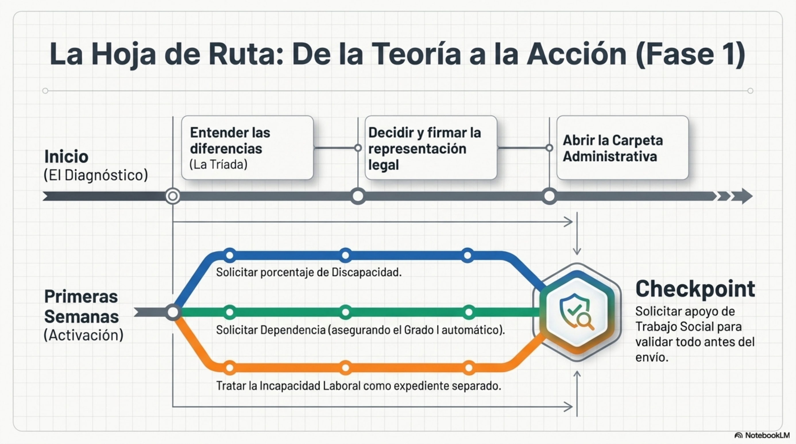
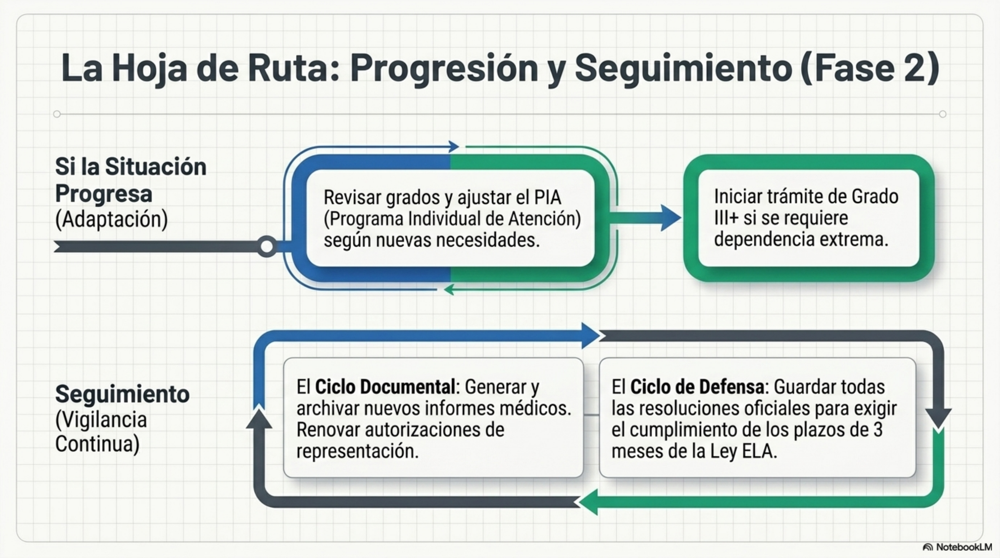
La dependencia no valora solo un diagnóstico. Valora cuánto apoyo necesita una persona para vivir con seguridad y dignidad en su día a día. Es la vía principal para acceder a servicios, cuidados profesionales y prestaciones económicas vinculadas al apoyo personal.
Ir al trámite oficial de dependencia en fuentes y límites.
Necesidad de apoyo para aseo, vestido, alimentación, movilidad, transferencias, uso del baño, supervisión o cuidado personal continuado.
Servicios, ayuda a domicilio, asistencia personal, prestaciones económicas y apoyos vinculados al cuidado, según el grado reconocido y el Programa Individual de Atención.
Cuando aumentan las necesidades de ayuda o la resolución ya no refleja la situación clínica o social real.
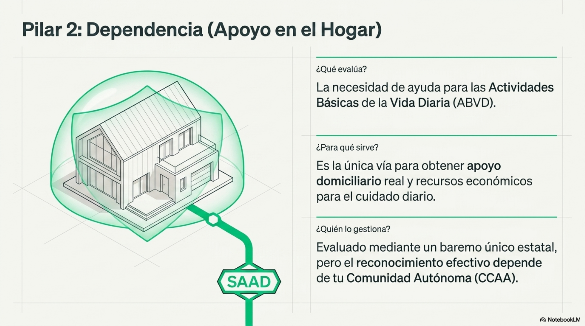
El reconocimiento de discapacidad acredita oficialmente el impacto funcional de la enfermedad. No sustituye a la dependencia, pero puede facilitar el acceso a recursos, adaptaciones y beneficios que no dependen directamente del cuidado diario.
Ir al trámite oficial de discapacidad en fuentes y límites.
Un porcentaje de discapacidad que refleja cómo afectan las limitaciones funcionales a la vida diaria y a la participación social.
Puede facilitar movilidad, beneficios fiscales, adaptaciones, recursos de empleo, ayudas técnicas, transporte y otros servicios.
Cuando existan cambios importantes o un error que afecte al grado reconocido, aunque la revisión ordinaria tenga sus propios plazos.
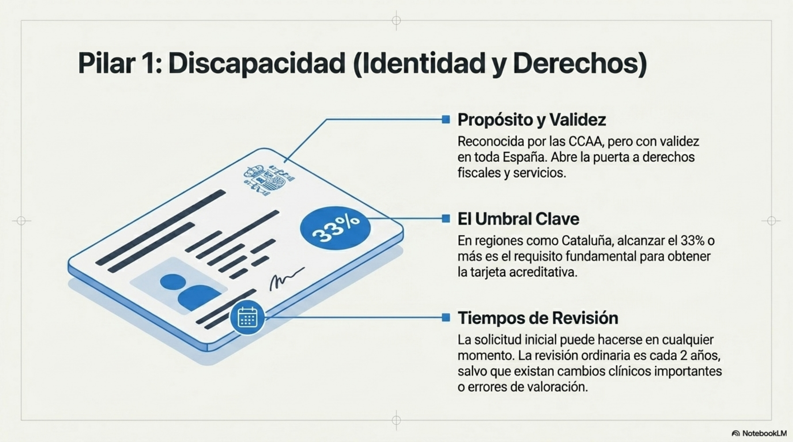
La incapacidad laboral no depende del grado de discapacidad ni del grado de dependencia. Su función es resolver qué ocurre cuando la enfermedad impide continuar trabajando en las condiciones habituales. Normalmente deriva en una pensión y un complemento de gran incapacidad (invalidez).
Ir al apartado de incapacidad permanente del INSS en fuentes y límites.
Cómo las limitaciones derivadas de la enfermedad afectan a la profesión habitual o a cualquier actividad laboral compatible con la situación de la persona.
Informes médicos actualizados, descripción real del puesto, vida laboral, partes de baja y documentos que reflejen cómo las limitaciones afectan a las tareas profesionales.
No esperes a tener resuelta la dependencia o la discapacidad para estudiar la incapacidad laboral. Son expedientes distintos y pueden avanzar en paralelo.
Pago adicional a la pensión que se otorga a quienes, además de estar incapacitados permanentemente, necesitan asistencia de otra persona para realizar los actos esenciales de la vida diaria.
La gestiona el Instituto Nacional de la Seguridad Social.
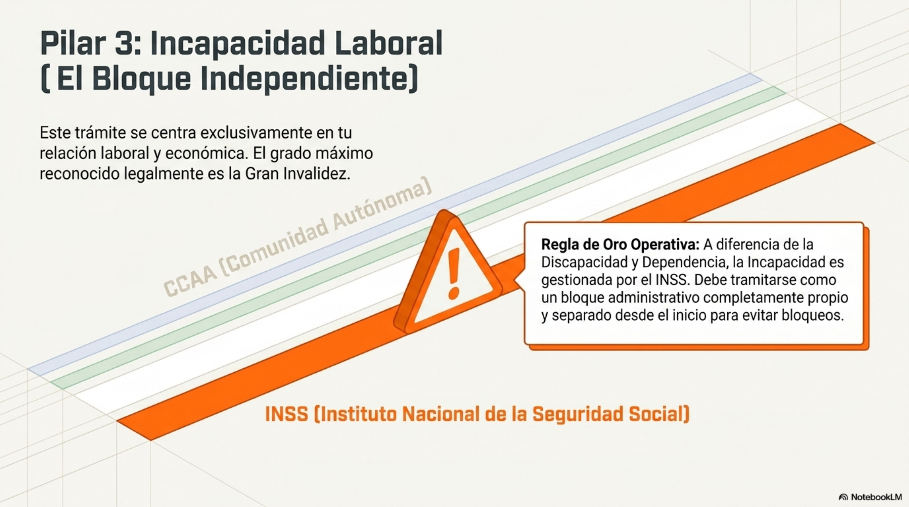
El Real Decreto-ley 11/2025 crea el Grado III+ de dependencia extrema para garantizar atención continuada y especializada 24 h en domicilio a personas con ELA avanzada y a otros procesos de alta complejidad y curso irreversible. Este nivel está pensado para situaciones avanzadas en las que existe dependencia completa y necesidad de asistencia continuada por problemas respiratorios, disfagia u otras necesidades de alta complejidad.
Personas que, teniendo reconocido el Grado III (gran dependencia), tengan un diagnóstico de ELA en fase avanzada, con dependencia completa para ABVD (actividades básicas de la vida diaria) y necesidad de asistencia instrumental y personal por problemas respiratorios y/o disfagia. También pueden acceder otras enfermedades o procesos de alta complejidad y curso irreversible.
Puede dar acceso a una prestación vinculada a ayuda a domicilio o a una prestación de asistencia personal para sostener atención profesional en el hogar. Queda excluida la prestación económica de cuidados en el entorno familiar.
Ante el organismo competente en bienestar social de tu comunidad autónoma, acompañando una evaluación médica especializada que acredite que se cumplen los requisitos específicos antes consignados.
De acuerdo con lo previsto en la Ley 3/2024, tres meses para la resolución desde su presentación, y otros tres para el PIA (Programa Individualizado de Atención).
Dependiendo de la comunidad autónoma en la que residas, es probable que te impongan copago o deducción de complementos como el de gran incapacidad. Antes de solicitar el PIA, asegúrate de si tu economía familiar puede subsistir a ese peaje.
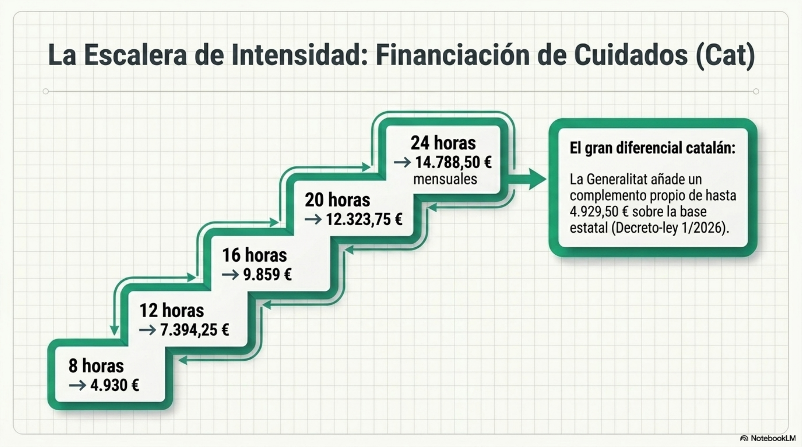
La administración puede pedir documentos distintos según el trámite, pero tener una carpeta actualizada evita retrasos, subsanaciones y búsquedas desesperadas cuando aparece una necesidad urgente.
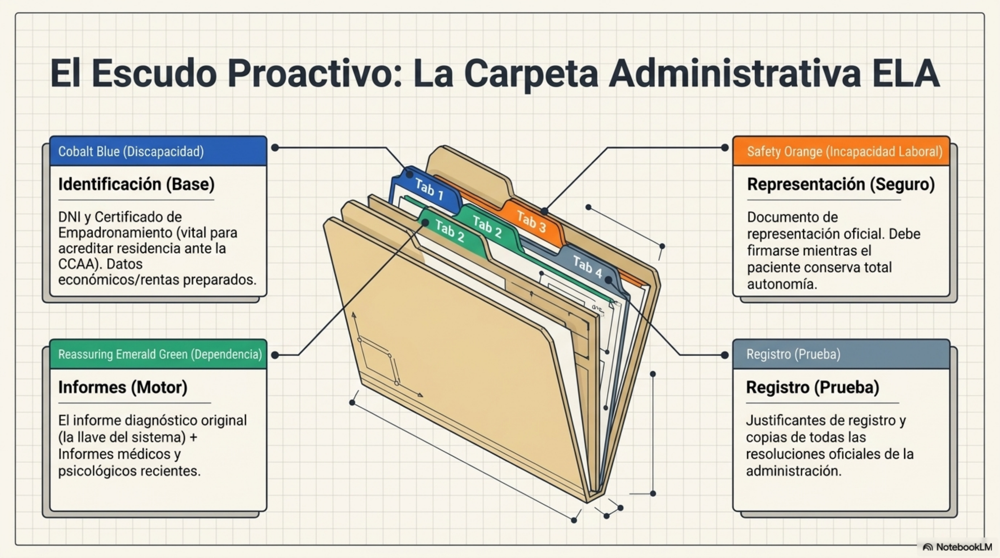
En una enfermedad progresiva, una resolución puede llegar cuando la realidad clínica ya ha cambiado.
Discapacidad, dependencia e incapacidad laboral sirven para finalidades distintas.
Para revisiones, explica qué ha cambiado y adjunta documentación clínica reciente.
Tener autorización o representación evita bloqueos si la firma, el desplazamiento o la comunicación se complican.
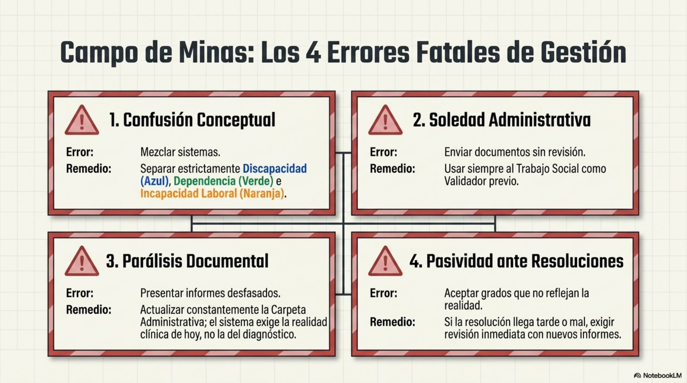
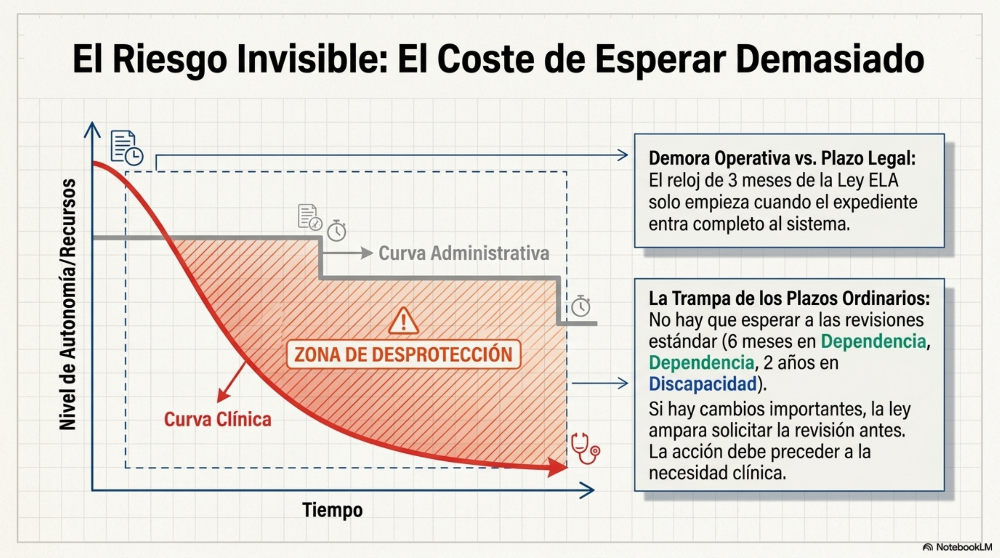
La enfermedad puede dificultar la firma, el desplazamiento, la comunicación o la gestión digital. Dejar preparada una representación válida evita que los trámites se detengan cuando más falta hacen.
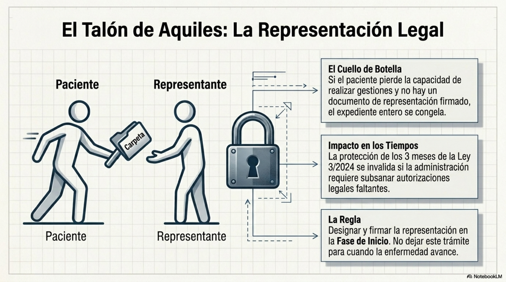
Para imprimir, compartir o revisar en familia
No hace falta marcarlo todo hoy. Esta lista sirve para saber qué está resuelto, qué está pendiente y qué conviene preguntar en la próxima cita con trabajo social, la asociación o el equipo sanitario.
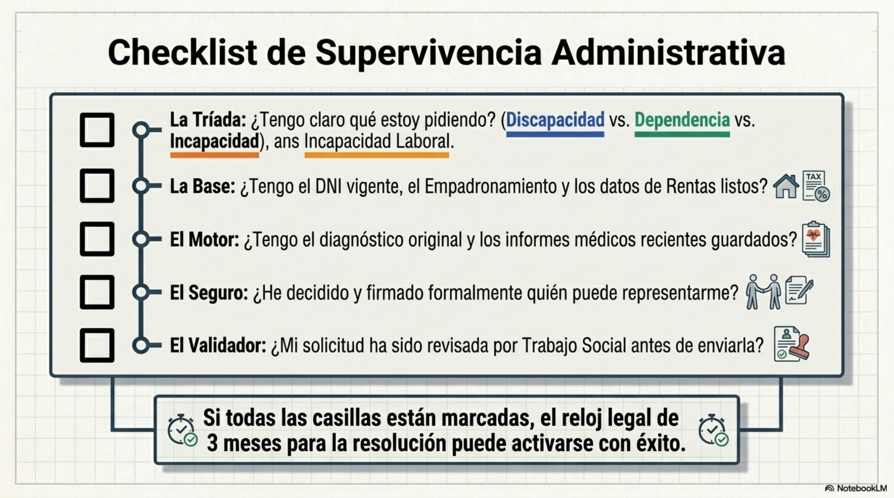
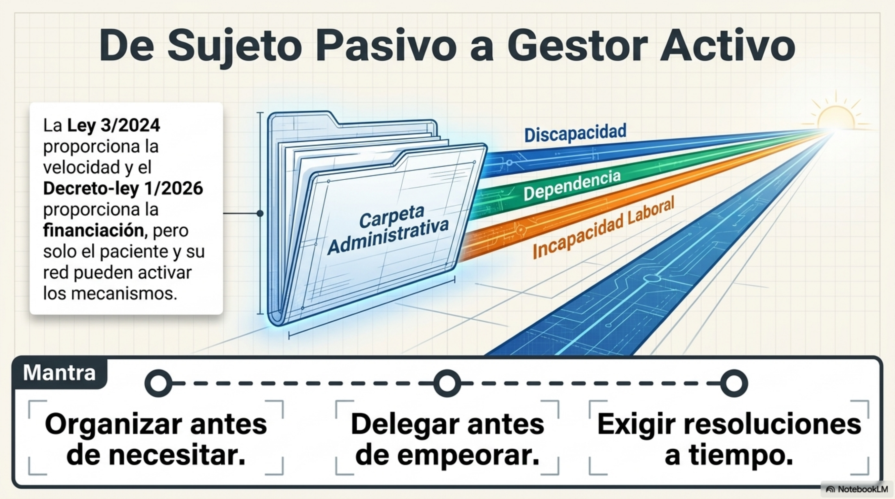
Esta guía resume normativa estatal y procedimientos administrativos vigentes en Cataluña en la fecha de revisión: 28 de junio de 2026. Las prestaciones, cuantías, plazos y circuitos pueden cambiar. Antes de tomar una decisión o presentar una solicitud, confirma la información con fuentes oficiales, trabajo social, una entidad especializada o asesoramiento profesional.